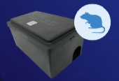

PROJECTS IN PROGRESS
CONNECTED FLY
OPEN →

CONNECTED RODENT
OPEN →
LINE AI
CUSTOMER SERVICE
OPEN →
WORKFORCE SMART
SCHEDULING SYSTEM
OPEN →
SEE EVENTS >
X
CONNECTED FLY
45%
TARGET LAUNCH
2026 NOV.
STATUS
網關、攝像頭-BSMI/NCC檢測
FIELD TEST - 4 SITES
TO BE DONE
定義台灣服務及商業模式
首批200台下單 - EST. 2026 JUL.
智慧病媒防治論壇暨產品發布會 - 2026-END
X
CONNECTED RODENT
10%
TARGET LAUNCH
2026-END?
STATUS
通訊穩定度測試
TO BE DONE
BSMI/NCC 認證
FIELD TEST - EST. 2026 JUN.
X
LINE AI CUSTOMER SERVICE
71%
STAGE 1 TARGET LAUNCH
2026 JUL.
STAGE 1 TARGET
提升客戶需求處理效率
利用AI機器人減少人力來回問答的時間成本
STAGE 2 TARGET
服務滿意度調查
X
WORKFORCE SMART SCHEDULING SYSTEM
30%
TARGET LAUNCH
2026 SEP.
TARGET
節省服務主任排班時間
智能偵測衝突，精準防錯
資訊即時同步，班表一改立即發送
將「手動計算」轉為「自動數據資產」